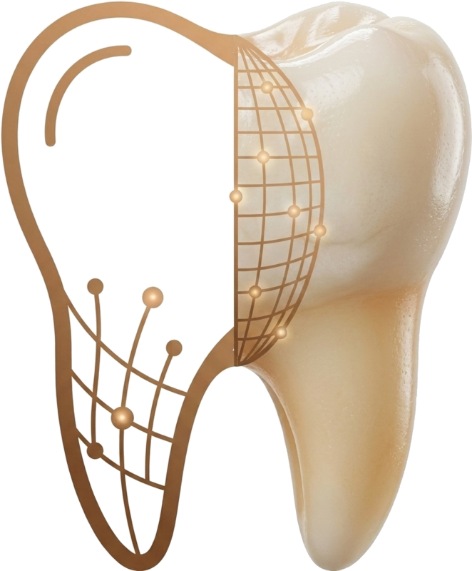
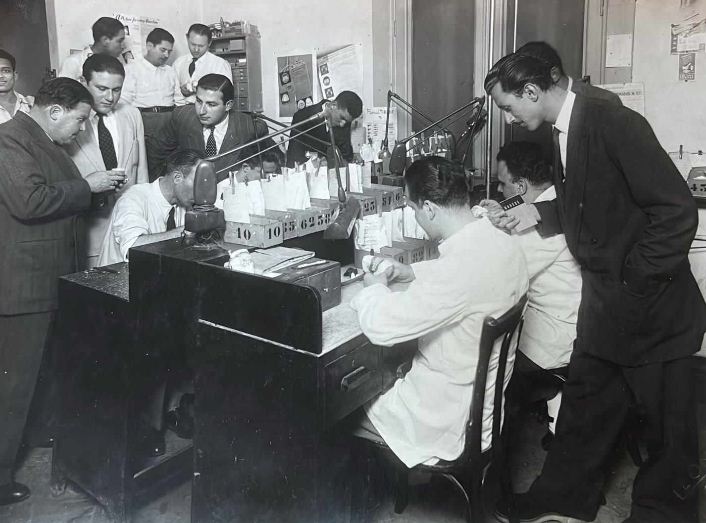

החיוך במרפאה שלך, האחריות שלנו.
שמירה על המוניטין של המרפאה שלך היא המחויבות שלנו. הצוות שלנו עובד באופן אישי על כל כתר ללא פשרות, תוך שילוב של בקרת איכות קפדנית ודיוק דיגיטלי.

New-KaromiDental Labמעבדת בוטיק · מורשת של שלושה דורות
בניו-קרומי משלבים מסורת של אומנות במעבדה יחד עם טכנולוגיה מתקדמת. תהליך עבודה דיגיטלי רציף שמבטיח שקט נפשי וליווי צמוד לכל מרפאה בארץ.


המורשת שלנו
הכול התחיל עם מקס קליסקר, סבו של ניר, שלמד את המקצוע ופתח מעבדה. אותה מסירות לדיוק, לאסתטיקה ולעבודת יד עוברת במשפחה עד היום מהשולחן של מקס ועד המעבדה הדיגיטלית של ניו-קרומי.
למה ניו-קרומי
שמירה על המוניטין של המרפאה שלך היא המחויבות שלנו. הצוות שלנו עובד באופן אישי על כל כתר ללא פשרות, תוך שילוב של בקרת איכות קפדנית ודיוק דיגיטלי.

מעבדת השיניים שלנו מתממשקת באופן מלא ומיידי עם כל הסורקים המובילים בתעשייה. שירות טכנולוגי מהיר וחלק שנועד לחסוך לך זמן כיסא ולייעל את התקשורת איתנו.

חריטה מדויקת של זירקוניה בשכבות Multi-Layer תוך שימוש בטכנולוגיות כרסום ממוחשבות. אנו שמים דגש על שקיפות וטקסטורות טבעיות, עם תהליך שמבטיח תוצאות עקביות.

מרפאות העובדות עמנו מרוויחות יחס אישי. גישה ישירה לצוות המעבדה, תקשורת טובה, וניהול חכם של ההזמנות שלכם עם תשומת לב לפרטים.
המוצרים שלנו
המגוון המלא של פתרונות השיקום — מיוצר כולו אצלנו במעבדה.
ממליצים עלינו
״[ציטוט המלצה ממרפאה שותפה — יתווסף בהמשך. שניים-שלושה משפטים על איכות העבודה, סגירת השוליים, העמידה בזמנים והיחס האישי של הצוות.]״
בואו נתחיל
אנחנו לא עובדים עם כל מרפאה. הקשר האישי והחיבור חשובים לנו לא פחות מאיכות העבודה. קבעו פגישה קצרה או שלחו לנו הודעת וואטסאפ וניפגש לקפה, ארוחת בוקר או סיור במעבדה שלנו בירושלים. נשמח להכיר אתכם!
יש לכם עבודה מורכבת או דחופה?
הרגישו חופשי להתקשר אלינו עכשיו: 02-624-9798